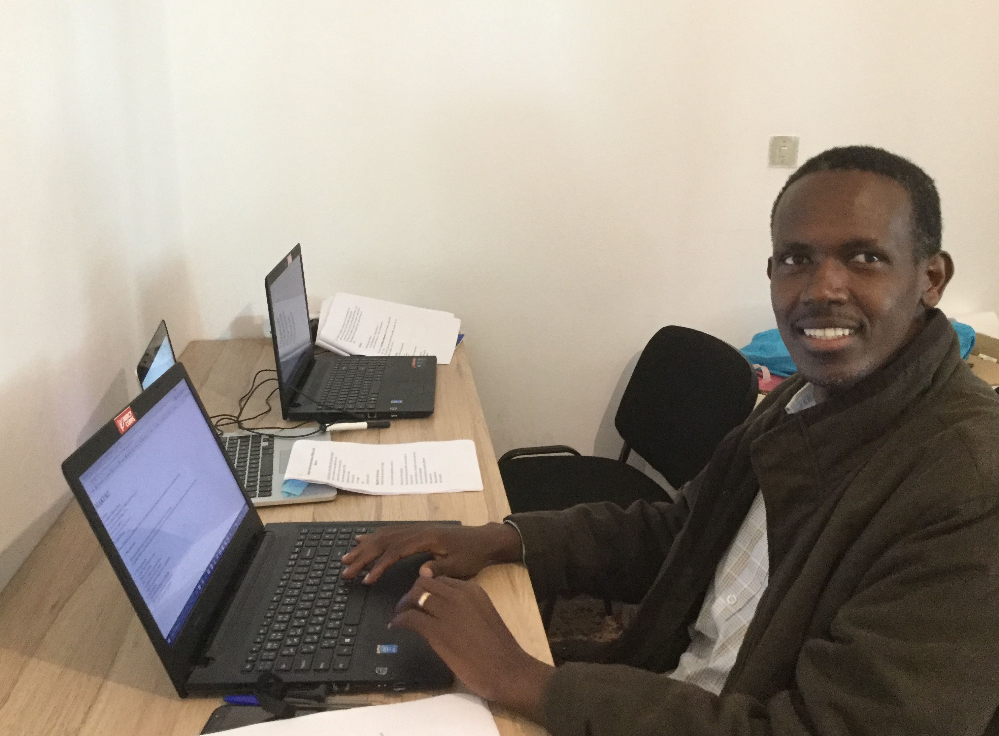

Présentation
Bonjour, dans cette page vous allez decouvrir mon parcours.

1984-1994:EP Shombo
1994-2001:Lycee Muramvya
2002-2007:Universite du Burundi Institut Technique Superieur Departement Genie Civil
Informatique: Word Excel Autocad Archicad Conduite de machines: petites voitures, camions poids lours, compacteurs et excavateur
Apprenez à créer votre site web avec HTML5 et CSS3
Stage dans le departement des marches publics du Burundi(DGMB)
Stage dans un Bureau d'etudes Ax-Construct pour les devis et supervision des chantiers.
Stages dans un bureau d'etude Francaise BCEOM pour la surveillance des routes
2008-2009: GTS charge des relations publics
2009-2010 : Entreprise COCOGEL Chef de Chantier pour la construction de l'institut superieur de police Chef de chantier pour l'extension de la banque BGF
2010-2014 : Directeur Technique pour la societe DEC nous avons construit Lycee communal de Mbuye
Terrassement et construction de l'usine de deparchage de cafe WEBCORE Kayanza
Construction des latrine vidangeable Renga et Gahweza en commune Kiganda
Construction des Homes des Enseignants au Lycee Communal de Muzye en Commune Giharo
Rehabilitation de l'Ecole Primaire Kabanga en Commune Kinyinya
Construction des Latrinee Videangeables aux Lycee Communal ITEBA ,Rumonge Urbain,Cabara en Commune Rumonge et Mabanda.
Surveillance de la construction de la route en terre Buruhukira -Nyakayi en commune Rumonge pour le Compte de FIDA Burundi
2015-2017 : Construction de deux maison en etage de juba au Sud Soudan Chef de Chantier pour OSBP Elegu qui est un projet de l'EAC pour la construction des frontiere de l'Uganda avec les pays Frontariers.